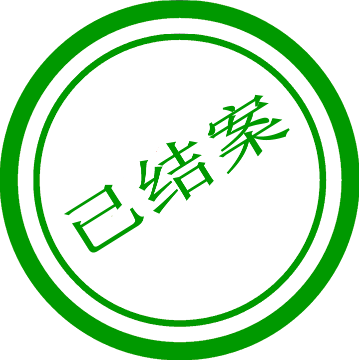

加载中...

问题描述
返回
文件序号：
发文部门：
线 别：
发现组别：
订单类别：
产品类型：
制令单号：
机 型：
订单数量：
已生产数量：
检验数量：
故障数量：
不 良 率：
异常描述：
异常图片：
审核经理：
审核时间：
驳回
审核确认
待发文部门审核
问题描述被驳回（部门经理驳回）
驳回人：
驳回时间：
驳回原因：
问题描述被驳回（质量判定驳回）
驳回人：
驳回时间：
驳回原因：
问题描述撤销信息
撤销人：
撤销时间：
撤销原因：
质量判定处理
通报类型
选择通报类型
普通类
CCC类
能效类
处理意见
图片上传（选填）
质量判定
通报类型：
处理意见：
判定图片：
审核经理：
审核时间：
驳回
修改
审核确认
质量判定被驳回
驳回人：
驳回时间：
驳回原因：
待质量判定处理
待质量判定审核
异常问题分析处理
是否返工
选择是否返工
是
否
问题归属
选择问题归属
无
工艺制程（工程）
操作（生产）
材料（质量）
设计（研发）
归属部门会签
选择是否需要归属部门会签
是
否
责任部门
造成原因：
临时方案：
长期方案：
是否返工：
问题归属：
是否转签：
转签部门：
审核经理：
审核时间：
驳回
修改
审核确认
责任部门异常处理被驳回
驳回人：
驳回时间：
驳回原因：
待工程部门审核
转签部门会签处理
处理人：
处理时间：
转签部门会签
问题转签部门：
原因及处理意见：
审核经理：
审核时间：
驳回
修改
审核确认
待转签部门会签处理
待转签部门会签审核
责任部门异常问题分析处理被驳回
驳回人：
驳回时间：
驳回原因：
待工程部门处理
质量验证
验证结果
选择质量验证结果
QC重检OK
放行
图片上传（选填）
长期方案
选择是否需要长期方案
是
否
责任部门
选择责任部门
工程部
生产部
质量部
研发部
长期方案简述
质量验证
质量验证结果：
质量验证结论：
质量验证图片：
需要长期方案：
责任归属部门：
长期方案简述：
审核经理：
审核时间：
驳回
修改
立即审核
长期方案跟踪记录
责任归属部门长期方案跟踪处理
长期方案被驳回（质量部长期方案验证驳回）
驳回人：
驳回时间：
驳回原因：
长期方案验证处理
长期方案验证结果
长期方案验证结果：
审核经理：
审核时间：
长期方案驳回
立即审核
待质量验证处理
待质量验证审核
待体系专员维护验证结果
待责任归属部门长期方案处理
待质量部门长期方案验证处理
待质量部门长期方案验证审核
选择驳回到的位置
点击选择驳回位置
问题描述
质量判定
责任部门
确认驳回